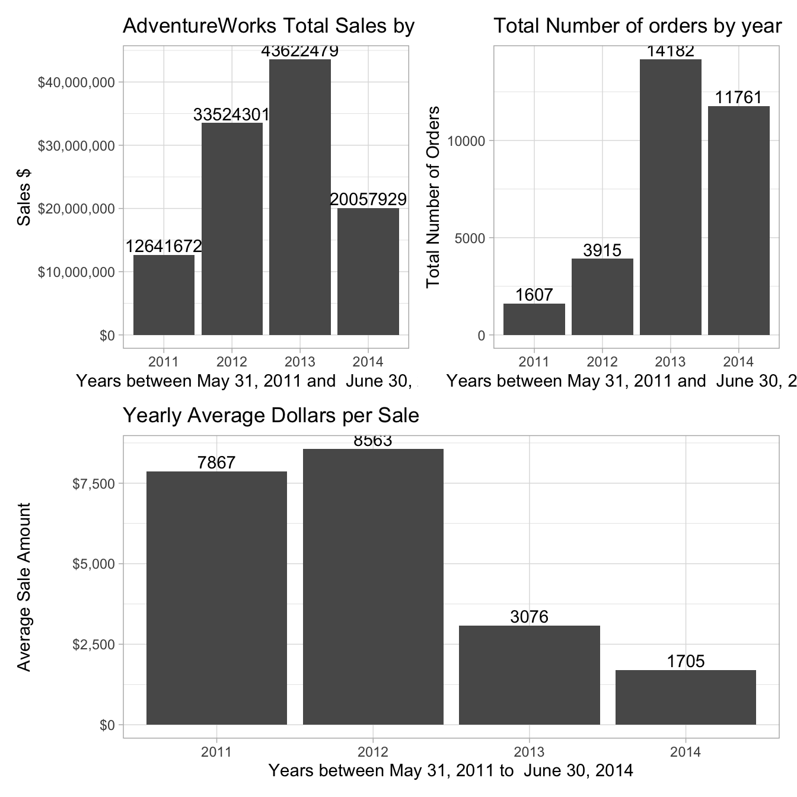
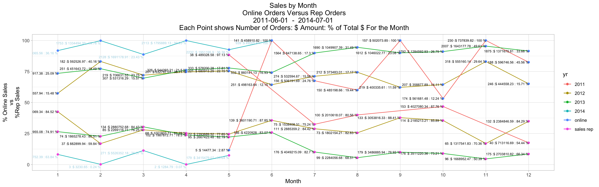

Chapter 9 Exploring a Single Table (with a Business Perspective)
This chapter demonstrates how to:
- Dig into a single Adventureworks table containing sales data
- Investigate the ddata from a business value perspective
This chapter explores one table, illustrating the kind of detective work that’s needed to understand one table. We’ll investigate the salesorderheader table in the sales schema.
This code currently uses the new pivot_longer function. You may need to install
devtools::install_github("tidyverse/tidyr")
sp_docker_start("adventureworks")
Sys.sleep(sleep_default)
con <- sp_get_postgres_connection(
host = "localhost",
port = 5432,
user = "postgres",
password = "postgres",
dbname = "adventureworks",
seconds_to_test = sleep_default, connection_tab = TRUE
)## <PqConnection> adventureworks@localhost:5432https://www.rstudio.com/wp-content/uploads/2015/03/rmarkdown-reference.pdf
(moved a big chunk about schemas to 050 - setup adventureworks and connect with rstudio)
The previous chapter has demonstrated some of the automated techniques for showing what’s in the table using specific functions and packages.
The first item we examine is Adventure Works’ sales dollars over the span of data available at different levels of detail. On an annual basis, are sales dollars trending up, down or flat?
annual_sales <- tbl(con, in_schema("sales", "salesorderheader")) %>%
mutate(year = substr(as.character(orderdate), 1, 4)) %>%
group_by(year) %>%
summarize(
min_orderdate = min(orderdate, na.rm = TRUE),
max_orderdate = max(orderdate, na.rm = TRUE),
so_dollars = round(sum(subtotal, na.rm = TRUE), 2),
avg_so_dollars = round(mean(subtotal, na.rm = TRUE),2),
so_cnt = n()
) %>%
arrange(year) %>%
select(year, min_orderdate, max_orderdate, so_dollars, avg_so_dollars, so_cnt) %>%
collect() %>%
as.data.frame()
annual_sales## year min_orderdate max_orderdate so_dollars avg_so_dollars so_cnt
## 1 2011 2011-05-31 2011-12-31 12641672.21 7866.63 1607
## 2 2012 2012-01-01 2012-12-31 33524301.33 8563.04 3915
## 3 2013 2013-01-01 2013-12-31 43622479.05 3075.90 14182
## 4 2014 2014-01-01 2014-06-30 20057928.81 1705.46 11761min_dt <- min(annual_sales$min_orderdate)
max_dt <- max(annual_sales$max_orderdate)
ggplot(data = annual_sales, aes(x = year, y = so_dollars)) +
geom_col(fill = "lightblue", color = "blue") +
geom_text(aes(label = paste(
"avg $ ", avg_so_dollars
)), vjust = 1.5) + # orders inside each bar at top
xlab("Year") +
ylab("Sales $") +
ggtitle(paste("Adventure Works Sales Dollars by Year\n ", min_dt, " - ", max_dt))
From the title we see that the available data covers the last seven months of 2011 through the first six months of 2014. From 2011 through 2013, sales are trending up and the growth between years is slowing down. 2014 sales dollars look a little behind 2013. Are sales dollars for 2014 really down or are sales dollars seasonal? To see if the sales dollars are sesonal, we will drill in and look at the monthly sales. Let’s first clean up the y-axis labels and include the number of sales orders and the average sales order dollars associated with the annual dollars?
9.1 Sales Orders and Dollars
How are the sales dollars related to the number of orders and what is the average order amount? In the next plot, the title is centered, the y-axis is rescaled, and number of orders and average order dollar amount is added to the top of each bar.
The following 3 plots show how odd the sales data is:
Look at average dollars per sale sale:
ggplot(data = annual_sales, aes(x = year, y = avg_so_dollars)) +
geom_text(aes(label = paste(
"orders", so_cnt, "
",
"avg $ ", avg_so_dollars
)), vjust = 1.5) + # orders inside each bar at top
geom_col(fill = "lightblue", color = "blue") +
xlab("Year") +
ylab("Average sale amount") +
scale_y_continuous(labels = dollar) + # clean up y-axis
ggtitle(paste("Average Dollars per Sale\n", min_dt, " - ", max_dt))
Look at number of orders per year:
ggplot(data = annual_sales, aes(x = year, y = as.numeric(so_cnt))) +
geom_col(fill = "lightblue", color = "blue") + geom_text(aes(label = paste(
"orders", so_cnt), vjust = 1.5)) + # orders inside each bar at top
xlab("Year") +
ylab("Total number of orders") +
ggtitle(paste("Number of Orders per Year\n", min_dt, " - ", max_dt))
Look at number of orders by the the average sales per order for the four years:
annual_sales %>% arrange(min_orderdate) %>%
ggplot(aes(x = avg_so_dollars, y = as.numeric(so_cnt))) +
geom_point() +
geom_text(aes(label = year, hjust = .5, vjust = 0)) +
geom_path() +
xlab("Average dollars per order") +
ylab("Total number of orders") +
ggtitle(paste("Number of Orders by Average Order Amount\n", min_dt, " - ", max_dt))
The orders in 2012 are about 30% of the 2013 sales, but the 2012 average sales order dollars are 2.75 larger than the 2013 average sales order.
Why are the number of orders increasing, but the average order dollar amount dropping?
9.2 Adventure Works Monthly Sales.
The next code block drills down from annual sales dollars to monthly sales dollars.
monthly_sales <- tbl(con, in_schema("sales", "salesorderheader")) %>%
mutate(yr = year(orderdate), mo = month(orderdate)) %>%
group_by(yr, mo) %>%
summarize(
min_orderdate = min(orderdate, na.rm = TRUE),
max_orderdate = max(orderdate, na.rm = TRUE),
so_dollars = round(sum(subtotal, na.rm = TRUE), 2),
avg_so_dollars = round(mean(subtotal, na.rm = TRUE), 2),
so_cnt = n()
) %>%
arrange(yr, mo) %>%
mutate(so_date = as.Date(min_orderdate)) %>%
select(yr, mo, so_date, min_orderdate, max_orderdate, so_dollars, avg_so_dollars, so_cnt) %>%
collect() %>%
as.data.frame()
sp_print_df(monthly_sales)min_dt <- min(monthly_sales$min_orderdate)
max_dt <- max(monthly_sales$max_orderdate)
ggplot(data = monthly_sales, aes(x = mo, y = so_dollars, fill = yr)) +
geom_col() +
xlab("Month") +
ylab("Sales Dollars") +
scale_y_continuous(labels = dollar) +
geom_text(aes(label = so_cnt), vjust = 1.5) + # Add nbr of orders
theme(plot.title = element_text(hjust = 0.5)) + # Center ggplot title
ggtitle(paste("Sales by Month\n", min_dt, " - ", max_dt))## Don't know how to automatically pick scale for object of type integer64. Defaulting to continuous.
That is one ugly and useless graph. It is hard to read/interpret * the dollar amounts associated with each color/year in each bar * the number of orders/month for each year, * the x-axis labels and associated months.
SQL does not have a factor data type. The ‘mo’ and ‘yr’ INT data types are converted to factors. This changes the yr legend on the right from the default black to blue to the default factor colors. The bar text positioned based on cum_so_dollars and adjusted down 1.5 units.
monthly_sales$mo <- as.factor(monthly_sales$mo)
monthly_sales$yr <- as.factor(monthly_sales$yr) # changes color scale from continuous blue to distinct colors
ggplot(data = monthly_sales, aes(x = mo, y = so_dollars, fill = yr)) +
geom_col(position = position_stack(reverse = TRUE)) + # reverse stacked bars 2011 bottom 2014 top
guides(fill = guide_legend(reverse = TRUE)) + # reverse bar/legend fill
xlab("Month") +
ylab("Sales Dollars") +
scale_y_continuous(labels = dollar) +
theme(plot.title = element_text(hjust = 0.5)) + # Center ggplot title
ggtitle(paste("Sales by Month by Year\nWith Number of Sales Orders\n", min_dt, " - ", max_dt))This plot is better. The colors associated with each year and the number of orders by year are much easier to read and the x-axis now reflect the months.
Having stacked bars, it is difficult to compare the monthly dollar amounts between the different years. The next plot fixes some of these short comings. Instead of stacking the bars vertically, the next plot shows the bars horizontally in ascending year order for each month and the plot width is increased from the default 7 to 16. Note that the first four months only have three years and that the bars are wider than those with four bars. The overall width of for each month is same.
# The next two statements were done in the previous code block
# Why do the need to be done again in this code block
monthly_sales$mo <- as.factor(monthly_sales$mo)
monthly_sales$yr <- as.factor(monthly_sales$yr)min_dt <- min(monthly_sales$min_orderdate)
max_dt <- max(monthly_sales$max_orderdate)
start_year <- monthly_sales %>%
filter(yr == min(yr)) %>%
group_by(yr) %>%
summarize(so_dollars = sum(so_dollars),
so_cnt = sum(so_cnt),
n_months = n(),
avg_dollars = so_dollars / n_months,
avg_cnt = so_cnt / n_months)
start_year## # A tibble: 1 x 6
## yr so_dollars so_cnt n_months avg_dollars avg_cnt
## <dbl> <dbl> <int64> <int> <dbl> <dbl>
## 1 2011 12641672. 1607 8 1580209. 201.normalized_monthly_sales <- monthly_sales %>%
mutate(dollars = (100 * so_dollars) / start_year$avg_dollars,
number_of_orders = (100 * so_cnt) / start_year$avg_cnt)
normalized_monthly_sales <- normalized_monthly_sales %>%
mutate(date = as.Date(min_orderdate)) %>%
select(date, dollars, number_of_orders) %>%
pivot_longer(-date, names_to = "relative_to_2011_average", values_to = "amount" )
normalized_monthly_sales %>%
ggplot(aes(date, amount, color = relative_to_2011_average)) +
geom_line() +
geom_hline(yintercept = 100) +
xlab("Date") +
ylab("") +
scale_x_date(date_labels = "%Y-%m", date_breaks = "6 months") +
ggtitle(paste("Adventureworks Normalized Monthly Sales\nNumber of Sales Orders and Dollar Totals\n", min_dt, " to ", max_dt))
ggplot(data = monthly_sales, aes(x = mo, y = so_dollars, fill = yr)) +
geom_col(position = position_stack(reverse = TRUE)) + # reverse stacked bars 2011 bottom 2014 top
guides(fill = guide_legend(reverse = TRUE)) + # reverse bar/legend fill
xlab("Month") +
ylab("Sales Dollars") +
scale_y_continuous(labels = dollar) +
theme(plot.title = element_text(hjust = 0.5)) + # Center ggplot title
ggtitle(paste("Sales by Month by Year\nWith Number of Sales Orders\n", min_dt, " - ", max_dt))# The next two statements were done in the previous code block
# Why do the need to be done again in this code block
monthly_sales$mo <- as.factor(monthly_sales$mo)
monthly_sales$yr <- as.factor(monthly_sales$yr)
# ggplot(data=monthly_sales,aes(x=mo,y=so_dollars,fill=yr)) +
ggplot(data = monthly_sales, aes(x = mo, y = so_dollars, fill = yr)) +
geom_col(position = "dodge", color = "black") + # unstack columns and outline in black
xlab("Month") +
ylab("Sales Dollars") +
scale_y_continuous(labels = dollar) +
# geom_text(aes(label = paste(so_cnt, "
# ", avg_so_dollars)),
# size = 2.5,
# color = "black",
# vjust = 1.5,
# position = position_dodge(.9)
# ) +
theme(plot.title = element_text(hjust = 0.5)) + # Center ggplot title
ggtitle(paste("Sales by Month by Year\nWith Number of Sales Orders\nAnd Average SO $ Amount\n", min_dt, " - ", max_dt))
The next plot shows the same data as a line graph.
# sp_print_df(monthly_sales)
ggplot(
data = monthly_sales,
aes(
x = mo, y = so_dollars, color = as.factor(yr),
group = as.factor(yr)
)
) + # Removes msg: Each group consists of only one observation. Do you need to adjust the group aesthetic?
geom_line() +
geom_point() +
xlab("Month") +
ylab("Sales Dollars") +
scale_y_continuous(labels = dollar) +
geom_text(aes(label = paste(so_cnt, "
", avg_so_dollars)),
size = 2.5,
color = "black",
vjust = 1.5,
position = position_dodge(.5)
) + # orders => avg so $ amt
theme(plot.title = element_text(hjust = .5)) + # Center ggplot title
ggtitle(paste("Sales by Month by Year\nWith Number of Sales Orders\nAnd Average SO $ Amount\n", min_dt, " - ", max_dt))
Figure 9.1: SO, SO Dollars, and Average SO Dollars
A couple of things jump out from the graph.
- 2012 and 2013 have similar sales dollar plots and peak every three months. This may reflect the closing as many sales orders as possible to make the quarterly sales numbers look good.
- 2011 has more variation than 2012 and 2013 and peaks every two months.
- 2014 has the most variation and also peaks every two months. Both the number of sales, 939, and the average sales order size, $52.19 plumet in June 2014.
# sp_print_df(monthly_sales)
ggplot(
data = monthly_sales,
aes(
x = so_date, y = so_dollars)
# , color = as.factor(yr),
# group = as.factor(yr)
# )
) +
geom_line() +
geom_smooth(se = FALSE) +
xlab("Month") +
ylab("Sales Dollars") +
scale_y_continuous(labels = dollar) +
scale_x_date(date_breaks = "year", date_labels = "%Y", date_minor_breaks = "3 months") +
theme(plot.title = element_text(hjust = .5)) + # Center ggplot title
ggtitle(paste("Sales by Month by Year\nWith Number of Sales Orders\nAnd Average SO $ Amount\n", min_dt, " - ", max_dt))## `geom_smooth()` using method = 'loess' and formula 'y ~ x'Figure 9.2: SO, SO Dollars, and Average SO Dollars-b
A couple of things jump out from the graph.
- 2012 and 2013 have similar sales dollar plots and peak every three months. This may reflect the closing as many sales orders as possible to make the quarterly sales numbers look good.
- 2011 has more variation than 2012 and 2013 and peaks every two months.
- 2014 has the most variation and also peaks every two months. Both the number of sales, 939, and the average sales order size, $52.19 plumet in June 2014.
# so_cnt_2011 <- monthly_sales %>%
# filter(yr == 2011) %>%
# select(so_cnt, min_orderdate, mo)
# so_cnt_2012_5_12 <- monthly_sales %>%
# filter(yr == 2012 & mo %in% c(5, 6, 7, 8, 9, 10, 11, 12)) %>%
# select(so_cnt, min_orderdate, mo)
# so_cnt_2012 <- monthly_sales %>%
# filter(yr == 2012) %>%
# select(so_cnt, min_orderdate, mo)
# so_cnt_2013 <- monthly_sales %>%
# filter(yr == 2013) %>%
# select(so_cnt, min_orderdate, mo)
# so_cnt_2013_1_6 <- monthly_sales %>%
# filter(yr == 2013 & mo %in% c(1, 2, 3, 4, 5, 6)) %>%
# select(so_cnt, min_oderdate, mo)
# so_cnt_2014 <- monthly_sales %>%
# filter(yr == 2014) %>%
# select(so_cnt, min_oderdate, mo)
# STOPPED HERE. need to join the data frames and plot the lags.
# so_cnt_2012_2011 <- so_cnt_2012_5_12 / so_cnt_2011
# so_cnt_2013_2012 <- so_cnt_2013 / so_cnt_2012
# so_cnt_2014_2013 <- so_cnt_2014 / so_cnt_2013_1_6
#
# cat("2012 vs 2011 sales order ratios for May - December
# ", unlist(so_cnt_2012_2011))
#
# cat("2013 vs 2012 sales order ratios
# ", unlist(so_cnt_2013_2012))
#
# cat("2014 vs 2013 sales order ratios for January - June
# ", unlist(so_cnt_2014_2013))Comparing the number of sales orders year over year by month for 2013 and 2012, one can see that the 2013 sales are between 1.2 and 1.8 times larger than the corresponding month of 2012 from January through June. In July the 2013 sales are 5 to 6 times the 2012 sales orders.
This trend continues into 2014 before the number of sales plumet to just 1.3 time in June.
What happened in July 2013?
mo_onl_pct <- dbGetQuery(
con,
"
SELECT *
,round(orders/mo_orders * 100.0,2) mo_pct
,round(sales_dollars/mo_sales * 100.0,2) mo_dlr_pct
FROM (SELECT EXTRACT(MONTH FROM orderdate) mo, EXTRACT(YEAR FROM orderdate) yr
, min(orderdate)::DATE min_orderdate, max(orderdate)::DATE max_orderdate
, round(sum(subtotal), 2) sales_dollars
, round(sum(sum(subtotal)) over (partition by EXTRACT(MONTH FROM orderdate),EXTRACT(YEAR FROM orderdate)
order by EXTRACT(YEAR FROM orderdate)),2) mo_sales
, count(*) * 1.0 orders
, sum(count(*)) over (partition by EXTRACT(MONTH FROM orderdate),EXTRACT(YEAR FROM orderdate)
order by EXTRACT(YEAR FROM orderdate)) mo_orders
, case when sh.onlineorderflag then 'online' else 'sales rep' end sales_type
FROM sales.salesorderheader sh
GROUP BY EXTRACT(MONTH FROM orderdate), EXTRACT(YEAR FROM orderdate),
case when sh.onlineorderflag then 'online' else 'sales rep' end
) as src
ORDER BY mo, yr, sales_type
"
)
sp_print_df(mo_onl_pct)min_dt <- min(monthly_sales$min_orderdate)
max_dt <- max(monthly_sales$max_orderdate)
mo_onl_pct$mo <- as.factor(mo_onl_pct$mo)
mo_onl_pct$yr <- as.factor(mo_onl_pct$yr)
mo_onl_pct$sales_type <- as.factor(mo_onl_pct$sales_type)
mo_2011 <- mo_onl_pct %>% filter(yr == 2011)
mo_2012 <- mo_onl_pct %>% filter(yr == 2012)
mo_2013 <- mo_onl_pct %>% filter(yr == 2013)
mo_2014 <- mo_onl_pct %>% filter(yr == 2014)
ggplot(data = NULL) +
# data=mo_2011 first results in the x axis months out of order.
geom_line(data = mo_2012, aes(x = mo, y = mo_pct, color = yr, group = sales_type)) +
geom_line(data = mo_2011, aes(x = mo, y = mo_pct, color = yr, group = sales_type)) +
geom_line(data = mo_2013, aes(x = mo, y = mo_pct, color = yr, group = sales_type)) +
geom_line(data = mo_2014, aes(x = mo, y = mo_pct, color = yr, group = sales_type)) +
geom_point(data = mo_2011, aes(x = mo, y = mo_pct, color = sales_type)) +
geom_point(data = mo_2012, aes(x = mo, y = mo_pct, color = sales_type)) +
geom_point(data = mo_2013, aes(x = mo, y = mo_pct, color = sales_type)) +
geom_point(data = mo_2014, aes(x = mo, y = mo_pct, color = sales_type)) +
geom_text(
data = mo_2011, aes(x = mo, y = mo_pct, label = paste(orders, ":$", sales_dollars, ":", mo_dlr_pct, "%")),
position = position_dodge(.3), size = 2.5, hjust = 0
) +
geom_text(
data = mo_2012, aes(x = mo, y = mo_pct, label = paste(orders, ":$", sales_dollars, ":", mo_dlr_pct, "%")),
position = position_dodge(.3), size = 2.5, hjust = 0
) +
geom_text(
data = mo_2013, aes(x = mo, y = mo_pct, label = paste(orders, ":$", sales_dollars, ":", mo_dlr_pct, "%")),
position = position_dodge(.3), size = 2.5, hjust = 0
) +
geom_text(
data = mo_2014, aes(x = mo, y = mo_pct, label = paste(orders, ":$", sales_dollars, ":", mo_dlr_pct, "%")), color = "blue",
position = position_dodge(.3), size = 2.5, hjust = 0, vjust = 1.5
) +
xlab("Month") +
ylab("% Online Sales\nvs\n%Rep Sales") +
theme(plot.title = element_text(hjust = .50)) +
ggtitle(paste(
"Sales by Month\n",
"Online Orders Versus Rep Orders\n",
min_dt, " - ", max_dt, "
",
"Each Point shows Number of Orders: $ Amount: % of Total $ For the Month"
)) The sales rep orders brought in over half the monthly sales dollars for every month except three, February, Arpil, and June of 2014. The monthly sales rep orders for those months are 3, 2, and 0 respectively.
The sales rep orders brought in over half the monthly sales dollars for every month except three, February, Arpil, and June of 2014. The monthly sales rep orders for those months are 3, 2, and 0 respectively.
9.3 Monthly Sales Rep Performance Analysis
mo_so_sreps <- dbGetQuery(
con,
"
SELECT *
,round(orders/mo_orders * 100.0,2) mo_pct
,round(sales_dollars/mo_sales * 100.0,2) mo_dlr_pct
FROM (SELECT EXTRACT(MONTH FROM orderdate) mo, EXTRACT(YEAR FROM orderdate) yr
, min(orderdate)::DATE min_orderdate, max(orderdate)::DATE max_orderdate
, round(sum(subtotal), 2) sales_dollars
, round(sum(sum(subtotal)) over (partition by EXTRACT(MONTH FROM orderdate),EXTRACT(YEAR FROM orderdate)
order by EXTRACT(YEAR FROM orderdate)),2) mo_sales
, count(*) * 1.0 orders
, sum(count(*)) over (partition by EXTRACT(MONTH FROM orderdate),EXTRACT(YEAR FROM orderdate)
order by EXTRACT(YEAR FROM orderdate)) mo_orders
, case when sh.onlineorderflag then 'online' else 'sales rep' end sales_type
FROM sales.salesorderheader sh
INNER JOIN sales.salesorderdetail sd
ON sh.salesorderid = sd.salesorderid
WHERE not sh.onlineorderflag
GROUP BY EXTRACT(MONTH FROM orderdate), EXTRACT(YEAR FROM orderdate),
case when sh.onlineorderflag then 'online' else 'sales rep' end
) as src
ORDER BY mo, yr, sales_type
"
)
sp_print_df(mo_so_sreps)monthly_sales_online <- dbGetQuery(
con,
"
SELECT EXTRACT(MONTH FROM orderdate) mo, EXTRACT(YEAR FROM orderdate) yr
, min(orderdate)::DATE min_orderdate, max(orderdate)::DATE max_orderdate
, so.category
, round(sum(subtotal), 2) sales_dollars
, count(*) * 1.0 orders
FROM sales.salesorderheader sh
JOIN sales.salesorderdetail sd ON SH.salesorderid = sd.salesorderid
JOIN sales.specialoffer so ON Sd.specialofferid = so.specialofferid
GROUP BY EXTRACT(MONTH FROM orderdate), EXTRACT(YEAR FROM orderdate), so.category
ORDER BY mo, yr
"
)
sp_print_df(monthly_sales_online)Figure 9.3: caption goes here
ggplot(data = monthly_sales_online, aes(x = factor(mo), y = sales_dollars, fill = factor(yr))) +
geom_col(position = "dodge", color = "black") + # unstack columns and outline in black
xlab("Month") +
ylab("Sales Dollars") +
scale_y_continuous(labels = dollar) +
geom_text(aes(label = category),
size = 2.5
# ,color = 'black'
, vjust = 1.5,
position = position_dodge(.9)
) + # orders => avg so $ amt
theme(plot.title = element_text(hjust = .50)) + # Center ggplot title
ggtitle(paste("Sales by Month\nBy Online Flag"))
Figure 9.3: caption goes here
monthly_sales_onl_pct <- dbGetQuery(
con,
"
select EXTRACT(MONTH FROM orderdate) mo
,EXTRACT(YEAR FROM orderdate) yr
,sum(ORDERQTY)
,sum(case when salespersonid is null and onlineorderflag then 1 else 0 end) onl
,sum(case when salespersonid is not null and not onlineorderflag then 1 else 0 end) sp
,round(sum(case when onlineorderflag then 1 else 0 end )*1.0/count(*) * 100.0,2) onl_pct
,round(sum(case when not onlineorderflag then 1 else 0 end )*1.0/count(*) * 100.0,2) sp_pct
,onlineorderflag
,count(*)
FROM sales.salesorderheader sh
INNER JOIN sales.salesorderdetail sd
ON sh.salesorderid = sd.salesorderid
INNER JOIN production.product p
ON sd.productid = p.productid
INNER JOIN sales.specialoffer so
ON sd.specialofferid = so.specialofferid
LEFT OUTER JOIN sales.specialofferproduct sop
ON sd.specialofferid = sop.specialofferid
and sd.productid = sop.productid
WHERE sop.productid is not null
group by EXTRACT(MONTH FROM orderdate)
,EXTRACT(YEAR FROM orderdate)
,onlineorderflag
order by mo,yr
"
)
sp_print_df(monthly_sales_onl_pct)mo_onl_pct <- dbGetQuery(
con,
"
SELECT *
,round(orders/mo_orders * 100.0,2) mo_pct
,round(sales_dollars/mo_sales * 100.0,2) mo_dlr_pct
FROM (SELECT EXTRACT(MONTH FROM orderdate) mo, EXTRACT(YEAR FROM orderdate) yr
, min(orderdate)::DATE min_orderdate, max(orderdate)::DATE max_orderdate
, round(sum(subtotal), 2) sales_dollars
, round(sum(sum(subtotal)) over (partition by EXTRACT(MONTH FROM orderdate),EXTRACT(YEAR FROM orderdate)
order by EXTRACT(YEAR FROM orderdate)),2) mo_sales
, count(*) * 1.0 orders
, sum(count(*)) over (partition by EXTRACT(MONTH FROM orderdate),EXTRACT(YEAR FROM orderdate)
order by EXTRACT(YEAR FROM orderdate)) mo_orders
, case when sh.onlineorderflag then 'online' else 'sales rep' end sales_type
FROM sales.salesorderheader sh
GROUP BY EXTRACT(MONTH FROM orderdate), EXTRACT(YEAR FROM orderdate),
case when sh.onlineorderflag then 'online' else 'sales rep' end
) as src
ORDER BY mo, yr, sales_type
"
)
sp_print_df(mo_onl_pct)min_dt <- min(monthly_sales$min_orderdate)
max_dt <- max(monthly_sales$max_orderdate)
mo_onl_pct$mo <- as.factor(mo_onl_pct$mo)
mo_onl_pct$yr <- as.factor(mo_onl_pct$yr)
mo_onl_pct$sales_type <- as.factor(mo_onl_pct$sales_type)
mo_2011 <- mo_onl_pct %>% filter(yr == 2011)
mo_2012 <- mo_onl_pct %>% filter(yr == 2012)
mo_2013 <- mo_onl_pct %>% filter(yr == 2013)
mo_2014 <- mo_onl_pct %>% filter(yr == 2014)
ggplot(data = NULL) +
# data=mo_2011 first results in the x axis months out of order.
geom_line(data = mo_2012, aes(x = mo, y = mo_pct, color = yr, group = sales_type)) +
geom_line(data = mo_2011, aes(x = mo, y = mo_pct, color = yr, group = sales_type)) +
geom_line(data = mo_2013, aes(x = mo, y = mo_pct, color = yr, group = sales_type)) +
geom_line(data = mo_2014, aes(x = mo, y = mo_pct, color = yr, group = sales_type)) +
geom_point(data = mo_2011, aes(x = mo, y = mo_pct, color = sales_type)) +
geom_point(data = mo_2012, aes(x = mo, y = mo_pct, color = sales_type)) +
geom_point(data = mo_2013, aes(x = mo, y = mo_pct, color = sales_type)) +
geom_point(data = mo_2014, aes(x = mo, y = mo_pct, color = sales_type)) +
geom_text(
data = mo_2011, aes(x = mo, y = mo_pct, label = paste(orders, ":$", sales_dollars, ":", mo_dlr_pct, "%")),
position = position_dodge(.3), size = 2.25, hjust = 1.0
) +
geom_text(
data = mo_2012, aes(x = mo, y = mo_pct, label = paste(orders, ":$", sales_dollars, ":", mo_dlr_pct, "%")),
position = position_dodge(.3), size = 2.25, hjust = 1.0
) +
geom_text(
data = mo_2013, aes(x = mo, y = mo_pct, label = paste(orders, ":$", sales_dollars, ":", mo_dlr_pct, "%")),
position = position_dodge(.3), size = 2.25, hjust = 1.0
) +
geom_text(
data = mo_2014, aes(x = mo, y = mo_pct, label = paste(orders, ":$", sales_dollars, ":", mo_dlr_pct, "%")), color = "blue",
position = position_dodge(.3), size = 2.25, hjust = 1.0, vjust = 1.5
) +
xlab("Month") +
ylab("% Online Sales\nvs\n%Rep Sales") +
theme(plot.title = element_text(hjust = .50)) +
ggtitle(paste(
"Sales by Month\n",
"Online Orders Versus Rep Orders\n",
min_dt, " - ", max_dt, "
",
"Each Point shows Number of Orders: $ Amount: % of Total $ For the Month"
))
This plot is much easier to read, but the sales orders => avg_s From the tidyR overview, https://tidyr.tidyverse.org/:
Tidy data is data where:
- Each variable is in a column.
- Each observation is a row.
- Each value is a cell.
The gather command throws the following warning:
attributes are not identical across measure variables;
they will be dropped9.4 Adventure Works Monthly Sales
Instead of annual sales, we drill into the monthly sales to see how sales dollars are generated over the year. We also clean up our next graph a bit. The y-axis is rescaled to make it easier to read and center the title.
monthly_sales <- dbGetQuery(
con,
"SELECT to_char(orderdate,'YYMM') yymm
,min(orderdate)::date min_orderdate
,max(orderdate)::date max_orderdate
,count(*) nbr_of_orders
,round(sum(subtotal),2) subtotal
FROM sales.salesorderheader sh
GROUP BY to_char(orderdate,'YYMM')
ORDER BY to_char(orderdate,'YYMM')
"
)
monthly_sales## yymm min_orderdate max_orderdate nbr_of_orders subtotal
## 1 1105 2011-05-31 2011-05-31 43 503805.92
## 2 1106 2011-06-01 2011-06-30 141 458910.82
## 3 1107 2011-07-01 2011-07-31 231 2044600.00
## 4 1108 2011-08-01 2011-08-31 250 2495816.73
## 5 1109 2011-09-01 2011-09-30 157 502073.85
## 6 1110 2011-10-01 2011-10-31 327 4588761.82
## 7 1111 2011-11-01 2011-11-30 230 737839.82
## 8 1112 2011-12-01 2011-12-31 228 1309863.25
## 9 1201 2012-01-01 2012-01-31 336 3970627.28
## 10 1202 2012-02-01 2012-02-29 219 1475426.91
## 11 1203 2012-03-01 2012-03-31 304 2975748.24
## 12 1204 2012-04-01 2012-04-30 269 1634600.80
## 13 1205 2012-05-01 2012-05-31 293 3074602.81
## 14 1206 2012-06-01 2012-06-30 390 4099354.36
## 15 1207 2012-07-01 2012-07-31 385 3417953.87
## 16 1208 2012-08-01 2012-08-31 285 2175637.22
## 17 1209 2012-09-01 2012-09-30 352 3454151.94
## 18 1210 2012-10-01 2012-10-31 321 2544091.11
## 19 1211 2012-11-01 2012-11-30 383 1872701.98
## 20 1212 2012-12-01 2012-12-31 378 2829404.82
## 21 1301 2013-01-01 2013-01-31 400 2087872.46
## 22 1302 2013-02-01 2013-02-28 325 2316922.15
## 23 1303 2013-03-01 2013-03-31 441 3412068.97
## 24 1304 2013-04-01 2013-04-30 428 2532265.91
## 25 1305 2013-05-01 2013-05-31 428 3245623.76
## 26 1306 2013-06-01 2013-06-30 719 5081069.13
## 27 1307 2013-07-01 2013-07-31 1740 4896353.74
## 28 1308 2013-08-01 2013-08-31 1789 3333964.07
## 29 1309 2013-09-01 2013-09-30 1791 4532908.71
## 30 1310 2013-10-01 2013-10-31 1968 4795813.29
## 31 1311 2013-11-01 2013-11-30 2103 3312130.25
## 32 1312 2013-12-01 2013-12-31 2050 4075486.63
## 33 1401 2014-01-01 2014-01-31 2141 4289817.95
## 34 1402 2014-02-01 2014-02-28 1756 1337725.04
## 35 1403 2014-03-01 2014-03-31 2399 7217531.09
## 36 1404 2014-04-01 2014-04-30 2115 1797173.92
## 37 1405 2014-05-01 2014-05-31 2411 5366674.97
## 38 1406 2014-06-01 2014-06-30 939 49005.84translate previous query with dplyr
monthly_sales <- tbl(con, in_schema("sales", "salesorderheader")) %>%
mutate(order_date = substr(as.character(orderdate), 1, 7)) %>%
group_by(order_date) %>%
summarize(
min_orderdate = min(orderdate),
max_orderdate = max(orderdate),
nbr_of_orders = n(),
so_dollars = round(sum(subtotal, na.rm = TRUE), 2)
) %>%
arrange(order_date) %>%
select(order_date, min_orderdate, max_orderdate, nbr_of_orders, so_dollars) %>%
collect() %>%
as.data.frame()## Warning: Missing values are always removed in SQL.
## Use `MIN(x, na.rm = TRUE)` to silence this warning
## This warning is displayed only once per session.## Warning: Missing values are always removed in SQL.
## Use `MAX(x, na.rm = TRUE)` to silence this warning
## This warning is displayed only once per session.## order_date min_orderdate max_orderdate nbr_of_orders so_dollars
## 1 2011-05 2011-05-31 2011-05-31 43 503805.92
## 2 2011-06 2011-06-01 2011-06-30 141 458910.82
## 3 2011-07 2011-07-01 2011-07-31 231 2044600.00
## 4 2011-08 2011-08-01 2011-08-31 250 2495816.73
## 5 2011-09 2011-09-01 2011-09-30 157 502073.85
## 6 2011-10 2011-10-01 2011-10-31 327 4588761.82
## 7 2011-11 2011-11-01 2011-11-30 230 737839.82
## 8 2011-12 2011-12-01 2011-12-31 228 1309863.25
## 9 2012-01 2012-01-01 2012-01-31 336 3970627.28
## 10 2012-02 2012-02-01 2012-02-29 219 1475426.91
## 11 2012-03 2012-03-01 2012-03-31 304 2975748.24
## 12 2012-04 2012-04-01 2012-04-30 269 1634600.80
## 13 2012-05 2012-05-01 2012-05-31 293 3074602.81
## 14 2012-06 2012-06-01 2012-06-30 390 4099354.36
## 15 2012-07 2012-07-01 2012-07-31 385 3417953.87
## 16 2012-08 2012-08-01 2012-08-31 285 2175637.22
## 17 2012-09 2012-09-01 2012-09-30 352 3454151.94
## 18 2012-10 2012-10-01 2012-10-31 321 2544091.11
## 19 2012-11 2012-11-01 2012-11-30 383 1872701.98
## 20 2012-12 2012-12-01 2012-12-31 378 2829404.82
## 21 2013-01 2013-01-01 2013-01-31 400 2087872.46
## 22 2013-02 2013-02-01 2013-02-28 325 2316922.15
## 23 2013-03 2013-03-01 2013-03-31 441 3412068.97
## 24 2013-04 2013-04-01 2013-04-30 428 2532265.91
## 25 2013-05 2013-05-01 2013-05-31 428 3245623.76
## 26 2013-06 2013-06-01 2013-06-30 719 5081069.13
## 27 2013-07 2013-07-01 2013-07-31 1740 4896353.74
## 28 2013-08 2013-08-01 2013-08-31 1789 3333964.07
## 29 2013-09 2013-09-01 2013-09-30 1791 4532908.71
## 30 2013-10 2013-10-01 2013-10-31 1968 4795813.29
## 31 2013-11 2013-11-01 2013-11-30 2103 3312130.25
## 32 2013-12 2013-12-01 2013-12-31 2050 4075486.63
## 33 2014-01 2014-01-01 2014-01-31 2141 4289817.95
## 34 2014-02 2014-02-01 2014-02-28 1756 1337725.04
## 35 2014-03 2014-03-01 2014-03-31 2399 7217531.09
## 36 2014-04 2014-04-01 2014-04-30 2115 1797173.92
## 37 2014-05 2014-05-01 2014-05-31 2411 5366674.97
## 38 2014-06 2014-06-01 2014-06-30 939 49005.84ggplot(data = monthly_sales, aes(x = min_orderdate, y = so_dollars)) +
geom_line() + # fill = 'green', color = 'blue') +
xlab("Year") +
ylab("Sales") +
scale_y_continuous(labels = dollar) + # see scales library
ggtitle(paste("Sales by Month\n", min_dt, " - ", max_dt)) +
theme(plot.title = element_text(hjust = 0.5)) + # Center ggplot title
theme(axis.text.x = element_text(angle = 60, hjust = 1))
9.5 Views
9.5.1 Explore the vsalelsperson and vsalespersonsalesbyfiscalyearsdata views
The following trick goes later in the book, where it’s used to prove the finding that to make sense of othe data you need to
## SELECT s.businessentityid,
## p.title,
## p.firstname,
## p.middlename,
## p.lastname,
## p.suffix,
## e.jobtitle,
## pp.phonenumber,
## pnt.name AS phonenumbertype,
## ea.emailaddress,
## p.emailpromotion,
## a.addressline1,
## a.addressline2,
## a.city,
## sp.name AS stateprovincename,
## a.postalcode,
## cr.name AS countryregionname,
## st.name AS territoryname,
## st."group" AS territorygroup,
## s.salesquota,
## s.salesytd,
## s.saleslastyear
## FROM sales.salesperson s
## JOIN humanresources.employee e ON e.businessentityid = s.businessentityid
## JOIN person.person p ON p.businessentityid = s.businessentityid
## JOIN person.businessentityaddress bea ON bea.businessentityid = s.businessentityid
## JOIN person.address a ON a.addressid = bea.addressid
## JOIN person.stateprovince sp ON sp.stateprovinceid = a.stateprovinceid
## JOIN person.countryregion cr ON cr.countryregioncode::text = sp.countryregioncode::text
## LEFT JOIN sales.salesterritory st ON st.territoryid = s.territoryid
## LEFT JOIN person.emailaddress ea ON ea.businessentityid = p.businessentityid
## LEFT JOIN person.personphone pp ON pp.businessentityid = p.businessentityid
## LEFT JOIN person.phonenumbertype pnt ON pnt.phonenumbertypeid = pp.phonenumbertypeid;## pg_get_viewdef
## 1 SELECT granular.salespersonid,\n granular.fullname,\n granular.jobtitle,\n granular.salesterritory,\n sum(granular.subtotal) AS salestotal,\n granular.fiscalyear\n FROM ( SELECT soh.salespersonid,\n ((p.firstname::text || ' '::text) || COALESCE(p.middlename::text || ' '::text, ''::text)) || p.lastname::text AS fullname,\n e.jobtitle,\n st.name AS salesterritory,\n soh.subtotal,\n date_part('year'::text, soh.orderdate + '6 mons'::interval) AS fiscalyear\n FROM sales.salesperson sp\n JOIN sales.salesorderheader soh ON sp.businessentityid = soh.salespersonid\n JOIN sales.salesterritory st ON sp.territoryid = st.territoryid\n JOIN humanresources.employee e ON soh.salespersonid = e.businessentityid\n JOIN person.person p ON p.businessentityid = sp.businessentityid) granular\n GROUP BY granular.salespersonid, granular.fullname, granular.jobtitle, granular.salesterritory, granular.fiscalyear;